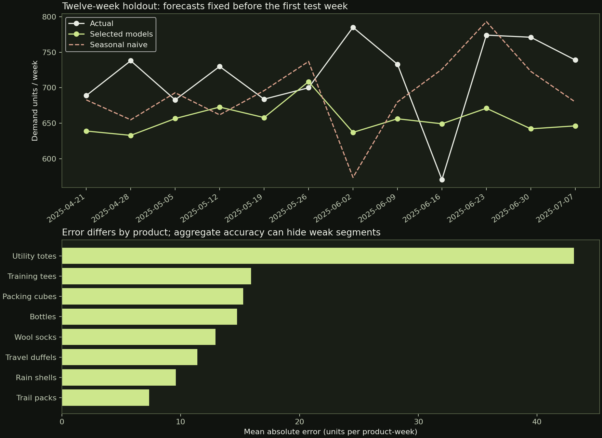

01 / Validate
Use earlier weeks.
At weeks 84, 96 and 108, train only on preceding observations and predict the next twelve weeks. Select each product’s model by the lowest MAE across 36 validation weeks.
Independent Portfolio Project | Synthetic Dataset
A Python analysis that compares transparent demand models, separates model selection from testing, and reports where the simple baseline still wins.
1,056 product-week observations · Eight products · 132 weeks · Three forecasting methods
A planner needs a twelve-week demand outlook. This analysis compares seasonal naive, a recent thirteen-week mean and a scaled seasonal forecast. Model choice is made separately for each product using three earlier validation windows. The final twelve weeks remain untouched until scoring.
The selected portfolio does not beat the seasonal baseline on absolute error in this holdout. Its RMSE is lower (22.50 versus 23.17), so the comparison depends on the cost of larger misses. This is a reason to investigate—not to declare a universal winner.
01 / Validate
At weeks 84, 96 and 108, train only on preceding observations and predict the next twelve weeks. Select each product’s model by the lowest MAE across 36 validation weeks.
02 / Freeze
Refit using weeks 0–119. Issue all twelve test forecasts at once. No test-week actuals are used to update predictions or select models.
03 / Evaluate
Report MAE, RMSE, demand-weighted absolute percentage error and directional bias. A portfolio total can conceal weak products and offsetting errors.

Forecasts cover April 21–July 7, 2025. The upper chart sums all eight products; error metrics below are calculated from individual product-week predictions.
Interactive evidence
| Approach | MAE (units) | RMSE (units) | WAPE | Bias (units) |
|---|
Lower MAE, RMSE and WAPE are better. Bias is forecast minus actual; negative means underforecasting. WAPE uses the sum of absolute errors divided by total actual demand.
| Week starting | Actual units | Forecast units | Forecast − actual |
|---|
The selected models underforecast by an average of 7.55 units per product-week. Utility totes, which have intermittent demand in the simulation, account for the largest product-level error. A sensible next step is to examine intermittent-demand baselines and evaluate additional chronological periods before adoption.
The final test must remain a record of this comparison. Any method developed after inspecting it needs a new test period. One twelve-week holdout is too short to establish durable superiority, inventory savings or service-level performance.
The package includes the generator, analysis code, thirteen automated tests, pinned dependencies, all validation and holdout results, and the Matplotlib chart. The synthetic demand process includes declared seasonality, trend, noise and intermittent zeros. Inventory constraints and promotions are outside scope.
{kind=link}